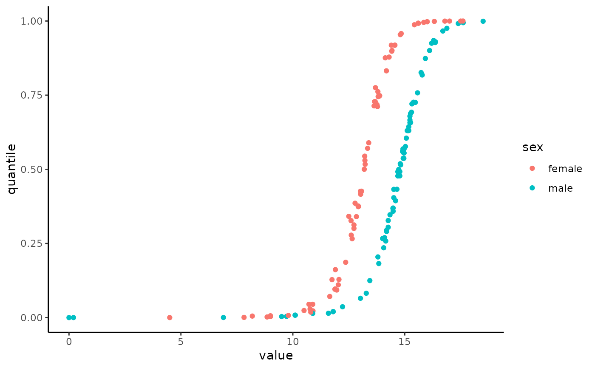

ln_normalize.RdNormalize standard laboratory measurements (e.g. hemoglobin, cholesterol levels) according to age and sex, based on the algorithms described in "Personalized lab test models to quantify disease potentials in healthy individuals" doi:10.1038/s41591-021-01468-6.
The "Clalit" reference distributions are based on 2.1B lab measurements taken from 2.8M individuals between 2002-2019, filtered to exclude severe chronic diseases and medication effects. The resulting normalized value is a quantile between 0 and 1, representing the value's position in the reference distribution.
The "UKBB" reference distributions are based on the UK-Biobank, a large-scale population-based cohort study of 500K individuals, which underwent the same filtering process as the "Clalit" reference distributions.
The list of supported labs can be found below or by running LAB_DETAILS$short_name.
ln_normalize(values, age, sex, lab, units = NULL, reference = "Clalit")
ln_normalize_multi(labs_df, reference = "Clalit")a vector of lab values
a vector of ages between 20-89 for "Clalit" reference and 35-80 for "UKBB". Can be a single value if all values are the same age.
a vector of either "male" or "female". Can be a single value if all values are the same sex.
the lab name. See LAB_DETAILS$short_name for a list of available labs.
the units of the lab values. See ln_lab_units(lab) for a list of available units for each lab. If NULL then the default units (ln_lab_default_units(lab)) for the lab will be used. If different values have different units then this should be a vector of the same length as values.
the reference distribution to use. Can be either "Clalit" or "UKBB" or "Clalit-demo". Please download the Clalit and UKBB reference distributions using ln_download_data().
a data frame with the columns "value", "age", "sex", "units", and "lab". The "lab" column should be a vector with the lab name per row. See ln_normalize for details on the other columns.
a vector of normalized values. If ln_download_data() was not run, a lower resolution reference distribution will be used, which can have an error of up to 5 quantiles (0.05). Otherwise, the full reference distribution will be used. You can check if the high resolution data was downloaded using ln_data_downloaded().
You can force the function to use the lower resolution distribution by setting options(labNorm.use_low_res = TRUE).
If the quantile information is not available (e.g. "Estradiol" for male patients), then the function will return NA.
It is highly reccomended to use ln_download_data to download the "Clalit" and "UKBB" reference distributions. If you choose not to download the data, the package will use the demo reference distributions included in the package ("Clalit-demo"), which have a resolution of 20 quantile bins and therefore may have an error of up to 5 quantiles (0.05), particularly at the edges of the distribution.
The following labs are supported (note that some labs are missing from the UKBB quantiles):
WBC
RBC
Hemoglobin
Hematocrit
Platelets
MCV
MCH
MCHC
RDW
MPV
Albumin
Total Cholesterol
Triglycerides
BMI
Iron
Transferrin
Ferritin
Total Globulin
Fibrinogen
Lymphocytes, Abs
Lymphocytes, %
Neutrophils, Abs
Neutrophils, %
Monocytes, Abs
Monocytes, %
Eosinophils, Abs
Eosinophils, %
Basophils, Abs
Basophils, %
Glucose
Urea
Creatinine
Uric Acid
Calcium
Phosphorus
Total Protein
HDL Cholesterol
LDL Cholesterol
Alk. Phosphatase
AST
ALT
GGT
LDH
CPK
Total Bilirubin
Direct Bilirubin
Hemoglobin A1c
Sodium
Potassium
Vitamin D (25-OH)
TSH
T3, Free
T4, Free
Blood Pressure, Systolic
Blood Pressure, Diastolic
Vitamin B12
PSA
ESR
CRP
Amylase
Folic Acid
Magnesium
Indirect Bilirubin
LH
Estradiol
# \donttest{
# Normalize Hemoglobin values to age and sex
hemoglobin_data$quantile <- ln_normalize(
hemoglobin_data$value,
hemoglobin_data$age,
hemoglobin_data$sex,
"Hemoglobin"
)
# plot the quantiles vs values for age 50-60
library(ggplot2)
library(dplyr)
#>
#> Attaching package: ‘dplyr’
#> The following objects are masked from ‘package:stats’:
#>
#> filter, lag
#> The following objects are masked from ‘package:base’:
#>
#> intersect, setdiff, setequal, union
hemoglobin_data %>%
filter(age >= 50 & age <= 60) %>%
ggplot(aes(x = value, y = quantile, color = sex)) +
geom_point() +
theme_classic()

# Different units
hemoglobin_diff_units <- hemoglobin_data
hemoglobin_diff_units$value <- hemoglobin_diff_units$value * 0.1
hemoglobin_diff_units$quantile <- ln_normalize(
hemoglobin_data$value,
hemoglobin_data$age,
hemoglobin_data$sex,
"Hemoglobin",
"mg/mL"
)
#> ℹ Converting mg/mL to g/dL for lab Hemoglobin. Using the formula `0.1 * x`.
# Multiple units
creatinine_diff_units <- creatinine_data
creatinine_diff_units$value <- c(
creatinine_diff_units$value[1:500] * 0.011312,
creatinine_diff_units$value[501:1000] * 11.312
)
creatinine_diff_units$quantile <- ln_normalize(
creatinine_diff_units$value,
creatinine_diff_units$age,
creatinine_diff_units$sex,
"Creatinine",
c(rep("umol/L", 500), rep("mmol/L", 500))
)
#> ℹ Converting umol/L to mg/dL for lab Creatinine. Using the formula `0.011312 * x`.
#> ℹ Converting mmol/L to mg/dL for lab Creatinine. Using the formula `11.312 * x`.
# Use UKBB as reference
hemoglobin_data$quantile_ukbb <- ln_normalize(
hemoglobin_data$value,
hemoglobin_data$age,
hemoglobin_data$sex,
"Hemoglobin",
reference = "UKBB"
)
#> Error in ln_normalize(hemoglobin_data$value, hemoglobin_data$age, hemoglobin_data$sex, "Hemoglobin", reference = "UKBB"): Invalid age. Age must be between 35 and 80.
# plot UKBB vs Clalit
hemoglobin_data %>%
filter(age >= 50 & age <= 60) %>%
ggplot(aes(x = quantile, y = quantile_ukbb, color = sex)) +
geom_point() +
theme_classic()
#> Error in geom_point(): Problem while computing aesthetics.
#> ℹ Error occurred in the 1st layer.
#> Caused by error in `FUN()`:
#> ! object 'quantile_ukbb' not found
# }
# \dontshow{
hemoglobin_data$quantile <- ln_normalize(
hemoglobin_data$value,
hemoglobin_data$age,
hemoglobin_data$sex,
"Hemoglobin",
reference = "Clalit-demo"
)
# }
library(dplyr)
multi_labs_df <- bind_rows(
hemoglobin_data %>% mutate(lab = "Hemoglobin"),
creatinine_data %>% mutate(lab = "Creatinine")
)
# \donttest{
multi_labs_df$quantile <- ln_normalize_multi(multi_labs_df)
# }
# \dontshow{
multi_labs_df$quantile <- ln_normalize_multi(multi_labs_df, reference = "Clalit-demo")
# }
head(multi_labs_df)
#> age sex value quantile lab
#> 1 20 male 9.39 0.03838718 Hemoglobin
#> 2 20 male 14.03 0.18914947 Hemoglobin
#> 3 20 male 14.44 0.28589076 Hemoglobin
#> 4 20 male 15.80 0.75032395 Hemoglobin
#> 5 20 female 12.06 0.24222206 Hemoglobin
#> 6 20 female 12.89 0.55270091 Hemoglobin